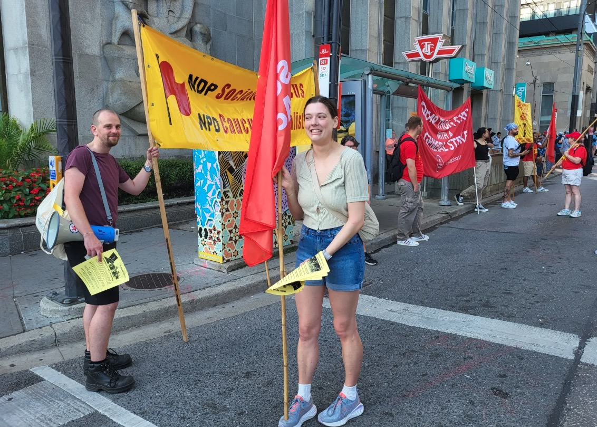

Members of Municipal Socialist Alliance (MSA) democratically endorsed Corey David for Toronto city council Ward 20 Scarborough southwest and registered the campaign at City Hall on Wednesday, September 20, 2023. See complete program at MSA Website.
While the Municipal Socialist Alliance (MSA) was formed by revolutionary socialists, anti-poverty organizers, and disability-justice organizers as an electoral alliance, our primary goal remains radical transformation of society rather than electoral success. In running an electoral campaign, MSA seek to build up our community-based power in order to tear down oppressive systems and institutions and replace status quo corporate domination with a government run by and for the working class and the oppressed.
Corey was the Socialist Action candidate in the January 2021 Scarborough Agincourt by-election, and was the MSA candidate in Ward 20 in the October 2022 municipal election. He championed social housing, quality public long-term care and health care, workers’ power, and de-funding the police.
MSA do not sacrifice the basic principles of liberation and justice for all in order to win elections. Therefore MSA participate in elections to challenge entrenched power and to re-orient discussion towards the fundamental societal transformation needed for the masses to live comfortably and in harmony with our neighbours and nature.
Just as Corey, MSA seeks to dismantle the systems of capitalism, imperialism, colonialism, hetero-normative patriarchy, and white supremacy. MSA also supports Indigenous Land Back and Indigenous self-determination, disbanding the police and carceral institutions, free public transit, expansion of public services, and immediate action on climate change.
For more information or to arrange an exclusive interview, please call: 647-986-1917 or email municipalsocialistalliance@gmail.com. To learn more about MSA, please visit Municipal Socialist Alliance.